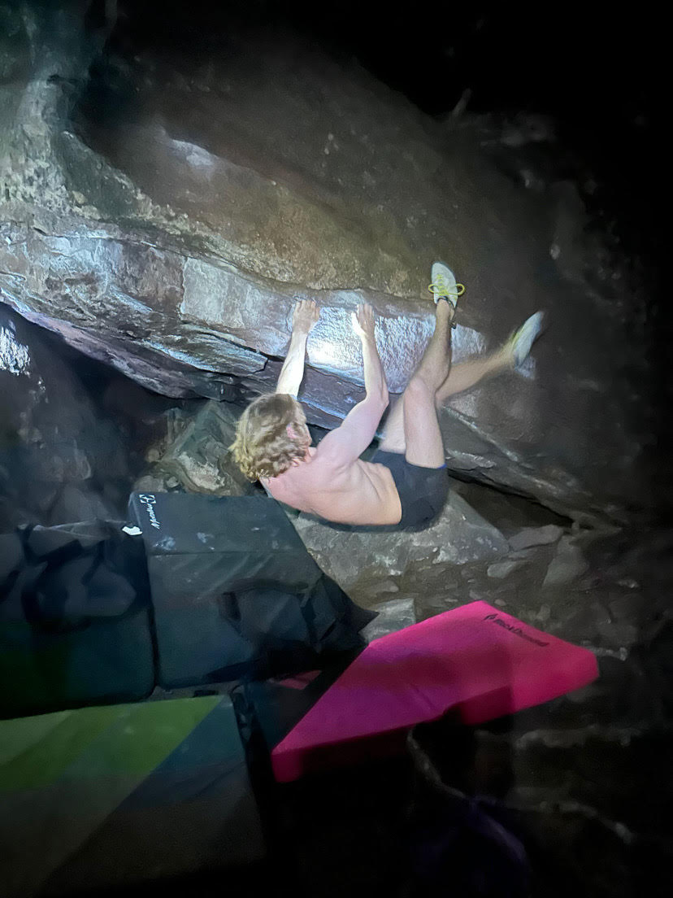
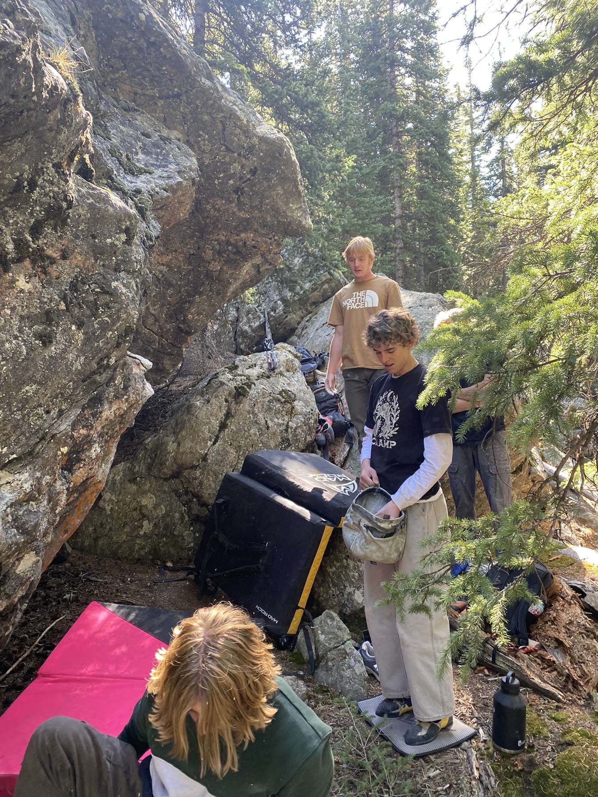
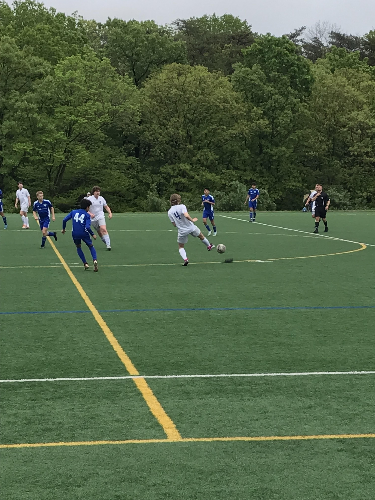

Josh Wright
I’m a junior at CU Boulder pursuing a BS in Computer Science. I’m especially interested in systems programming, problem solving, and building projects that push me to think deeply about both performance and design. What I enjoy most about computer science is the creativity involved in solving problems efficiently. I like finding solutions that are not just correct, but also elegant, concise, and well-structured.
Through coursework and personal projects, I’ve worked with languages like C++, Java, and Python, and I’ve developed a strong interest in object-oriented programming, parallel computing, and software design. I enjoy learning how things work under the hood and applying that understanding to create clean, practical software. Whether I’m working on a school assignment or a personal project, I’m always looking for ways to improve my technical skills and write better code.
Outside of academics, I like staying active and exploring different hobbies. Some of the things I currently enjoy most are rock climbing, snowboarding, soccer, and playing guitar. These hobbies help me stay balanced and give me opportunities to challenge myself in new ways outside of programming.
Outside of computer science, I like to participate in a variety of hobbies. The activities I'm currently enjoying most are rock climbing, snowboarding, soccer, and playing guitar.

Rock climbing has taught me patience, focus, and problem-solving in a completely different way than programming. I enjoy working through difficult routes, improving technique over time, and challenging myself both physically and mentally every time I climb.

Snowboarding is one of my favorite ways to spend time outdoors. I enjoy the combination of speed, balance, and progression, and I like pushing myself to become more comfortable and confident on harder terrain each season.

Soccer has always been a great outlet for competition, teamwork, and staying active. I enjoy the fast pace of the game and the need to think quickly, communicate well, and constantly adapt to what’s happening on the field.
You can view my resume below or download it directly.
SongSeeker allows users to search songs and artists while discovering music recommendations tailored to their interests. It integrates the Spotify and Last.fm APIs and was developed collaboratively with a team of six.
A C++ object-oriented implementation of the Candyland board game for two players. This project helped strengthen my understanding of classes, program structure, and building interactive game logic.
A simple machine learning framework created in C++, ran in parallel on the GPU with CUDA. Also features a test suite that compares CPU vs GPU runtimes.